Git hands-on session within RStudio
Stijn Van Hoey
Peter Desmet
Thierry Onkelinx
2018-02-23
1 Setup
When starting this tutorial, we assume:
2 Working on your own
We start with you working on a repository, without interference of colleagues
2.1 Create a repository
A new project starts with a new repository, which can be easily setup using GitHub.com.
- Go to GitHub and login
- Follow this tutorial to create a repo and create your first (online) commit to your repository
For this first exercise, we have chosen to create a dummy repository:
 (you do not have to copy the example, choose any name :-))
(you do not have to copy the example, choose any name :-))
The resulting repository layout will look like this:
 (Remember that there is a
(Remember that there is a Clone or Download button on this page!)
2.2 Git for RStudio configuration
As we will mainly use Git(Hub) to manage R/Rmarkdown scripts, the existing integration of Rstudio and Git provides a convenient way to add version control.
2.2.1 Installation
Just to make sure, in case you did not already installed Git and Rstudio:
When installed properly:
- Open RStudio
2.2.2 Configuration
In order to start using version control in Rstudio, we have to do some configuration the first time. You only leed to do this configuration once.
First of all, tell RStudio where to find the Git installation.
- Go to
Tools > Global Options - Click on
Git/SVN. - Check Enable version control interface for RStudio projects
- Set the path to the Git executable that you installed*
- Check use Git bash as shell for Git projects
*If you do not know where Git is installed, open your command line (cmd in Start for Windows user). When the cmd is open, type where git and hit enter. The path should be something like: C:/Program Files (x86)/Git/bin/git.exe. Still in trouble? Check this out.

Next, we have to tell Github who we actually are, in order to make the connection to the online account. To do so, Git requires the configuration of your Github (!) username and GitHub email:
- Go to
Tools > Shellto open the Git Shell In the shell, type the following command and enter:
git config --global user.name "mygithubusername"Still in the shell, type the following command and enter:
git config --global user.email "my.name@inbo.be"
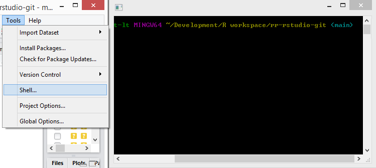
Use your GitHub username! You can check if you’re set up correctly by typing git config --global --list in the same shell.
When successful, the configuration is done. Congratulations!
2.3 Clone a repo to work locally
We have initiated a repository online and a working Git within Rstudio. Hence, we can start working on the code locally by downloading the repository to our computer. Rstudio provides a convenient way to start a new project as a Git repository.
- On your GitHub repository page, copy the repository HTTPS url (remember the green button?)
- In Rstudio,
File > New Project..., selectVersion Control, chooseGit - Provide the repository HTTPS link you just copied (the project name will be filled in as well)
- Browse to desired directory where you will manage your project/code
To get the https link, you need to click the green button and make sure to copy paste the link with as title Clone with HTTPS:

An example of the project setup using an existing Git repsoitory:

In your File explorer, search for your project folder and check the content. Does this corresponds to what is shown online on your repository website?
2.4 .gitignore
When starting a new project in RStudio, it will always add a file .gitignore if it does not already exists (you can actually also create one in the online setup). A gitignore file defines all those files that should not be taken into account by Git. An example is the myprojectname.Rproj file, as this is a user/computer specific file.
Hence, we can ignore the myprojectname.Rproj file by adding the file to the .gitignore text-file. We can d this inside Rstudio:
- Go to
gitpane (the tab that says Git), - right click on
....Projand selectIgnore... - Check if the content of
.gitignoreis correctly updated and clickSave.
As our dummy project is called favourite-fruit-color, the .Rproj file is called favourite-fruit-color.Rproj. We right click on the file and select Ignore...:

When to use .gitignore:
- in any programming language, some files are derivatives
- sensitive information (passwords,…)
- a folder with large data files that should not be in the history (and backuped elsewhere!)
- a temp/ folder for just garbage you create/…
Note that you can use wild cards e.g. *.Rproj to exclude a group of files from the version control:

Check the content of the .gitignore file. If satisfied, click Save:
2.5 Make commits
As the .gitignore is a newly added file (or at least adapted), we can commit this change and provide a commit message:
- Go to
gitpane - Check the box next to
.gitignore - Click
Commit - Add a
commit messageand click commit - Click
Closeto remove the commit summary
The status of the .gitignore file before the file was committed, with the yellow question mark saying that the file is yet unknown to Git:
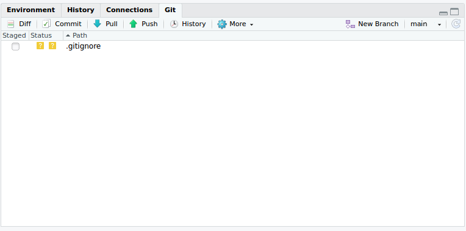
By checking the box and clicking commit, we add the file and commit this addition with a commit message:

We get a small technical overview of the alterations we provided with this commit:
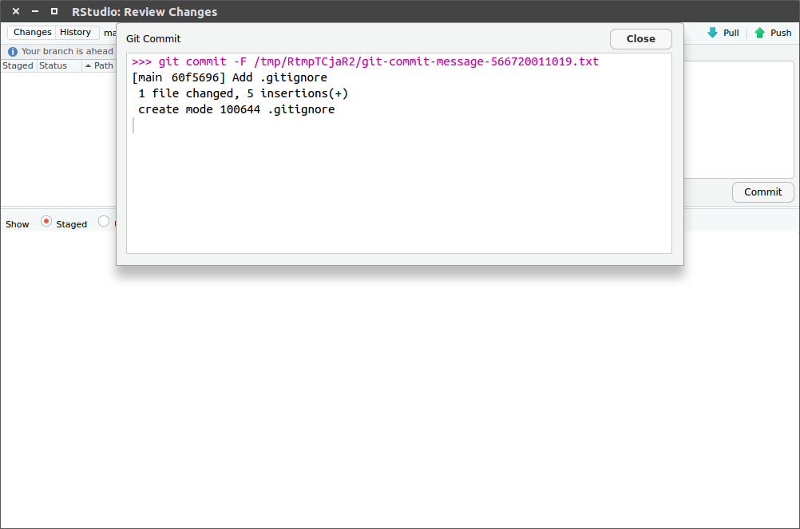
It is good practice to commit often, so you will do this a lot. Each commit should only contain changes related to a single problem/element/… Each commit is a snapshot of your project and the messages describe the story of your project.
As documentation is crucial, providing some more information in the README.md file will help others (and yourself in a couple of months/years) to understand the aim of the project. Just as we adapted the README.md file online earlier, we can do the same locally:
- Update the
README.mdinside Rstudio - Commit your changes
Remark the reporting of the changed lines linked to this commit with green and red colors:
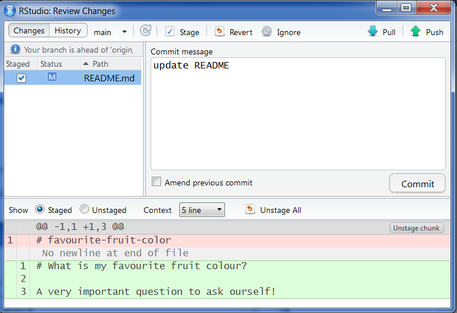
2.6 Push the changes to GitHub
Note that the git pane displays your branch is ahead of ‘origin/master’ by 2 commits. This is actually providing you a warning message that there is no backup of these two commits! In order to store these changes on GitHub as well, we have to push our changes to GitHub:
- Click
pushin thegitpane - Go to your repository on GitHub to verify the commits and file contents
Rstudio gives you a warning about the status of your local commits versus those stored on GitHub:
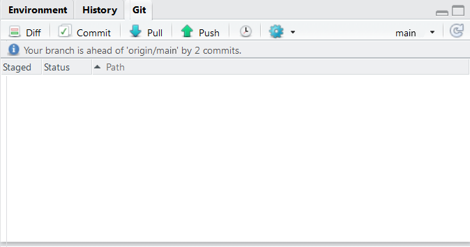
Is the README.md adapted? Where do you find the Commits overview online?

2.7 Additional configuration - store your password
It is a tedious task to retype the password each time you want to push anything to GitHub. Luckily, you can store your credentials when using https:
- Click on the
morebutton in thegitpane and selectShell - Type
git config --global credential.helper store - Type
exitto quit the shell
The next time git needs your credentials, it will ask them one more time and store them!
The more button has a wheel symbol:

2.8 Create logical commits
As mentioned earlier, you should commit often and make sure each commit links to a specific change/problem. Sometimes, this means that you have to split the additions in a single file into two individual commits. Rstudio provides the interface to include specific lines of code into a commit message:

To summarize, the following actions can be executed:
stage xyz: add the xyz from the commitunstage xyz: remove the xyz from the commitdiscard xyz: revert the changes in the xyz (be careful, can’t be undone!)
and xyz can be - a single line - a selection of lines - a chunk - RStudio will automatically split the changes in chunks - chunks are defined by 10 unchanged lines between changes
- Make 2 unrelated changes to your
README.mdlocally - Create one
commitfor each change:- Select the changes you want to commit and click
stage selection - Add a
commit messageand clickCommit
- Select the changes you want to commit and click
- Do NOT push (yet)
2.9 Create a conflict!
Sometimes, conflicts will appear. Maybe because a collaborator was working on exactly the same lines of code or because of a mistake in your workflow,… No worries, we’ll learn you how to fix conflicts by initiating one.
Update your README.md online on GitHub, on the exact same line you just edited locally in the previous exercise.
If you do not remember how to change files online, check again this online tutorial. Check the result of your online commit, similar to:

Back in Rstudio, try to push (click push) your local changes.
Git provides a warning about the remote changes on the same repository:

Click Pull to download the changes from Github
Git notices the CONFLICT and demands you what to do next:
- Fix conflicts
- Commit the result after fixing the conflict

Keep calm and resolve conflict!
Each conflict is always marked by the combination of the following elements:
<<<<<<< HEAD
your local code
=======
the code as it exists on Github
>>>>>>> origin/masterTo solve a conflict, you have to decide which version of the code you want to keep.
Open
README.mdin RStudio:<<<<<<< HEAD A simple analysis to visualize my favourite fruit colour. ======= A simple analysis to discover my favourite fruit color. >>>>>>> origin/masterChoose what you want to keep and only keep that code in the file:
A simple analysis to discover my favourite fruit colour.- Commit the adaptation with a commit message
- Click
Pushto update GitHub
If you encounter a conflict in the future, repeat this procedure.
2.10 Add a new file
During a project, new files will be added to the project folder, which need to be version controlled as well. New directories and files can be added and committed, just like any other adaptation.
By clicking the box next to a file, the file is staged (i.e. ready to be committed). Staging a new directory will stage all files in the directory. However, you can not stage empty directories!
- Add a
fruits.csvfile in a/datasubdirectory - Link to this file in the
README.md(use relative paths), mentioning the purpose of the file - Commit both changes (new data file and the
README.mdadaptation) in a single commit message
Rstudio provides information about the status of the file:
README.mdfile is adapted (blue Modified box)data/is currently unknown to Git (yellow Question mark box)
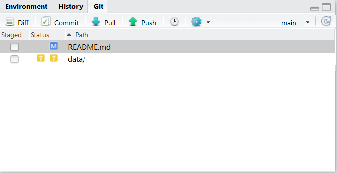
Clicking both will make them ready to be committed. Remark, the data/fruits.csv file gets a green Added box:

2.11 Adapt last commit
Sometimes, you just did a commit of some adaptations, but you see that you missed some lines of code that should be included in the same commit. Git provides the ability to amend a previous commit with some additional adaptations.
- Make a change in
fruits.csv Commitas usual but checkamend previous commitin the commit message box
Warning: don’t do this on commits that have been pushed. That would result in conflicts.
Next to the Commit box, the amend option is available:
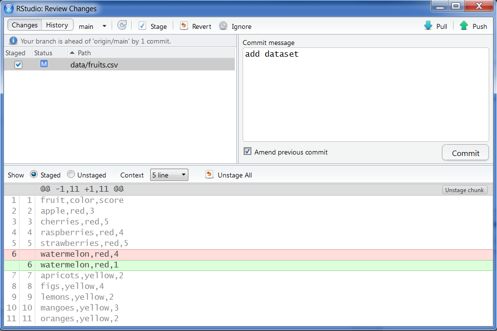
2.12 View history
One of the advantages of using version control with regular commits is that you get a history of your project. You can check the history (the series of commits) both online on GitHub as well as in Rstudio:
- Within Rstudio, click on
historyin thegitpane - On the webpage of your repository, chek the commit list
Notice the presence of History twice in the following image:
- As a separate pane (your R command history): this has nothing to do with Git
- Within the
gitpane (the history of your commit messages)

You can click on each of the commits to verify the adaptations that were part of the specific commit:

2.13 Create a branch to experiment
2.13.1 How to make a new branch?
It is good practice to ALWAYS work on (short-living) branches. It allows you to freely experiment until you are satisfied of the result and it ensures your master provides the last stable version of your analysis/project.
- Open the git shell
Create a branch by a
checkoutto newbranch:git checkout -b analysis-script- Get an overview of your branches:
git branch - Add an analysis file in a
/srcdirectory Committhe adaptation to the branch
For this example, we decided to use the name analysis-script for the branch name. Make sure your branch name makes sense for the work you are planning to do. Use lower case characters and - in between words (NO spaces!).
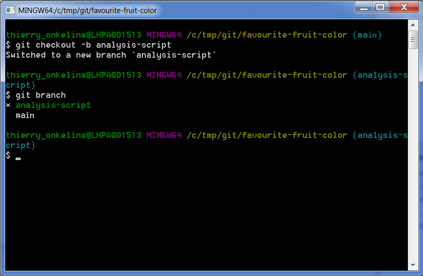
The new versions of Rstudio provide the functionality to create a branch directly!
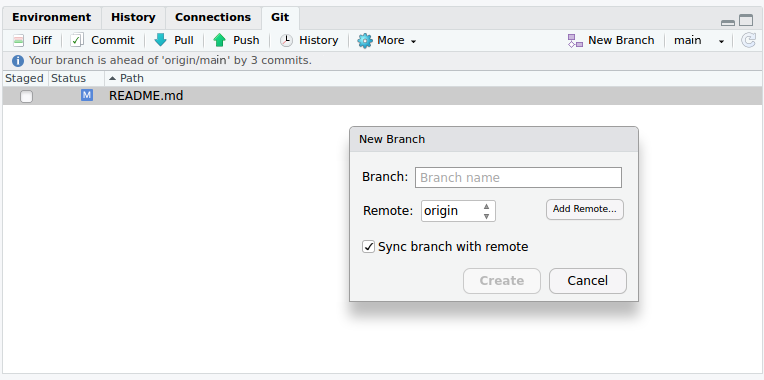
2.13.2 Effect of switching branches
The first time you switch branches and you see files disappearing, you might be wondering what is happening. No worries, Git is just making sure you only see those files relevant for the active branch. In the next exercise, we will explore this feature in more detail:
- Click on the right-top dropdown in the
gitpane - Switch to the status of the
masterbranch by selecting(LOCAL BRANCHES) -> master - Verify your local directory structure in file explorer: where are your files?
- Switch back to the status of the new branch (in the example i.e.
analysis-script) - Verify your local directory structure in file explorer again: where are your files?
As in our example, the branch name is analysis-script, the dropdown defines this as the currently active branch. Clicking on the dropdown provides an overview of all branches:
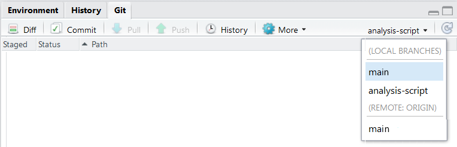
Rstudio provides you information about the switch to the master branch:

2.13.3 First push of a new branch
Notice that the pull and push buttons in the git pane are grayed out. When working on a branch, we have to activate these buttons:
- Open the Git Shell
- Type
git push -u origin analysis-script - On GitHub website, look for your branch and check the adaptations to the branch
When using the interface of Rstudio to create a branch, this functionality is already included by checking the box Sync branch with remote.
This will also activate the pull and push buttons. From now on, you can commit as many times as you want/need to this branch and push the commits to GitHub, where it will be stored under the same branch name:

2.14 Pull requests
When satisfied about the work done in a branch, it is time to bring these adaptations to the master branch as part of the stable analysis. NEVER merge locally on your machine, we will ALWAYS merge a branch online, by making use of a Pull request!
2.14.1 Create a pull request
- Click
push(if not already done) - At Github, browse to your repository.
- Create a
pull requestonline
Github actually suggests you to Compare & Pull request on the webpage in a new yellow box. If you do not see the messag, you can still initiate a Pull request. The Pull request aims to insert the adaptations in your branch into the master branch.

In a new dialog, you can provide a short summary line about the Pull request with the option to add additional information. By clicking the Create pull request button, you actually propose the merge into the master branch.

2.14.2 Review your pull request
While working on your own and you are sure about the changes, you can actually merge the Pull request yourself. Although, this is the ideal moment for revision of the code (you can ask people to review your code, but automated checks can be added as well).
- Review your own code!
- If OK, merge the
Pull request. - Do not forget to delete the branch online (Github asks you to)

2.14.3 Include your accepted work to local master
For the moment, your adaptations are integrated into the master branch online, but not yet on your local computer. So, you have to update the local master branch:
- In Rstudio, sitch to the
masterbranch (right top inGitpane) - Click
Pull Remove the local branch as well (otherwise you will have a lot of them after a while). You need to open the Shell:
git branch -D analysis-script
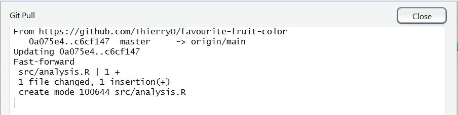
3 Working together
3.1 Invite collaborators
You now have experienced all the major steps to effectively use version control with Git. We can now apply these same steps when working together.
- Team up with two or three persons
- Let one person invite the others, provide them with read/write access as explained in this tutorial
On your own repository, you have all admin rights to add Collaborators in the Settings section of GitHub:

When invited to collaborate, you have to Accept invitation in order to start working on the repository:

3.2 Issues
Issues can be used for multiple purposes: alerting colleagues about a bug in the code, proposing new features, discussing specific steps in the analysis,…
- Raise an
issueonline - Provide issues with an appropriate
label - Assign your colleague to the issue
3.3 Online adaptations
When there is no coding involved, e.g. you just need to update a few text lines in a markdown file, the usage of the online GitHub features could be sufficient enough:
- Make an adaptation to an online file
- Propose a
pull requestand assign your collaborator - Merge the adaptation to the
masterbranch
3.4 Local adaptations
In this section, all the individual steps come together to collaborate on the code of your project. First, we will start with a rehearsel of the individual steps as an exercise. Afterwards, we will try out a workflow that can be used as a step by step procedure in the future.
Working on a local branch - merging online
- As collaborator,
clonethe other repository to your local computer - Create a new
branchlocally with a different name - Adapt the content of a file
commityour adaptationpushyourbranchto the remote repository- Go to GitHub and make a
pull request - Revise the work and
mergeonline when appropriate - Update your local work
- Check if all adaptations are represented in your local files
Tip: All functionalities are available in the previous sections
3.5 Step by step workflow
The steps of the previous exercise provide the main building blocks. Nevertheless, when working on a project, a step by step procedure can help in the beginning to remember the workflow. A dedicated version for Rstudio is available at this repo as a separate workflow overview.
3.6 Release
Once you are satisfied with the status of your analysis, it makes sense to create a release:
- For publications (DOI)
- For code/software development versions
- For course notes
Follow this tutorial to create a release.
4 Some more Rules for collaboration:
- Commit often, make small commits
- Don’t mix changes in 1 commit
- Think about your commit messages
- Always commit into a feature branch, never in the
masterbranch. - Always start features branches from the
masterbranch. - Only work in your own branches.
- Never merge someone else’s
pull requestwithout their consent. - Don’t keep long-lived branches (form of technical debt)
There’s no such thing, as a free lunch…
…but if you’re hungry:
- Webinars
- Tutorials
Information combined at INBO Git course.
You’re welcome to provide issues, pull requests,…